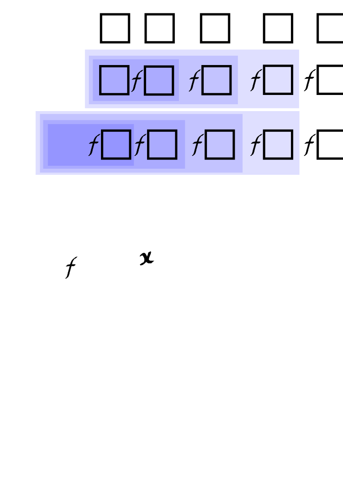

Accumulators¶
Converge (v1\)x v1\[x] v1 scan x (v1/)x v1/[x] v1 over x
Do n v1\x v1\[n;x] n v1/x v1/[n;x]
While t v1\x v1\[t;x] t v1/x v1/[t;x]
Scan (v2\)x v2\[x] (v2)scan x Over (v2/)x v2/[x] (v2)over x
Scan x v2\y v2\[x;y] Over x v2/y v2/[x;y]
Scan v3\[x;y;z] x y\z Over v3/[x;y;z]
v1, v2, v3: applicable value (rank 1-3) n: integer≥0 t: unary truth map x, y: arguments/indexes of v
An accumulator is an iterator that takes an applicable value as argument and derives a function that evaluates the value, first on its entire (first) argument, then on the results of successive evaluations.
There are two accumulators, Scan and Over. They have the same syntax and perform the same computation. But where the Scan-derived functions return the result of each evaluation, those of Over return only the last result.
Over resembles map reduce in some other programming languages.
Debugging
If puzzled by the result of using Over, replace it with Scan and examine the intermediate results. They are usually illuminating.
Scan, Over and memory
While Scan and Over perform the same computation, in general, Over requires less memory, because it does not store intermediate results.
The number of successive evaluations is determined differently for unary and for higher-rank values.
The domain of the accumulators is functions, lists, and dictionaries that represent finite-state machines.
q)yrp / a European tour
from to wp
----------------
London Paris 0
Paris Genoa 1
Genoa Milan 1
Milan Vienna 1
Vienna Berlin 1
Berlin London 0
q)show route:yrp[`from]!yrp[`to] / finite-state machine
London| Paris
Paris | Genoa
Genoa | Milan
Milan | Vienna
Vienna| Berlin
Berlin| London
Unary values¶
(v1\)x (v1/)x / unary application
x v1\y x v1/y / binary application
The function an accumulator derives from a unary value is variadic. The result of the first evaluation is the right argument for the second evaluation. And so on.
The value is evaluated on the entire right argument, not on items of it.
When applied as a binary, the number of evaluations the derived function performs is determined by its left argument, or (when applied as a unary) by convergence.
| syntax | name | number of successive evaluations |
|---|---|---|
(v1\)x, (v1/)x |
Converge | until two successive evaluations match, or an evaluation matches x |
i v1\x, i v1/x |
Do | i, a non-negative integer |
t v1\x, t v1/x |
While | until unary value t, evaluated on the result, returns 0 |
Converge¶
q)(neg\)1 / Converge
1 -1
q)l:-10?10
q)(l\)iasc l
4 0 8 5 7 2 6 3 1 9
0 1 2 3 4 5 6 7 8 9
1 8 5 7 0 3 6 4 2 9
8 2 3 4 1 7 6 0 5 9
2 5 7 0 8 4 6 1 3 9
5 3 4 1 2 0 6 8 7 9
3 7 0 8 5 1 6 2 4 9
7 4 1 2 3 8 6 5 0 9
q)(rotate[1]\)"abcd"
"abcd"
"bcda"
"cdab"
"dabc"
q)({x*x}\)0.1
0.1 0.01 0.0001 1e-08 1e-16 1e-32 1e-64 1e-128 1e-256 0
q)(route\)`Genoa / a circular tour
`Genoa`Milan`Vienna`Berlin`London`Paris
q)(not/) 42 / never returns!
Matching is governed by comparison tolerance.
Do¶
In its binary form, with an integer n≥0 as the left argument, the derived function is applied n times.
q)dbl:2*
q)3 dbl\2 7 / Do
2 7
4 14
8 28
16 56
q)5 enlist\1
1
,1
,,1
,,,1
,,,,1
,,,,,1
q)5(`f;)\1
1
(`f;1)
(`f;(`f;1))
(`f;(`f;(`f;1)))
(`f;(`f;(`f;(`f;1))))
(`f;(`f;(`f;(`f;(`f;1)))))
q)/ First 10+2 numbers of Fibonacci sequence
q)10{x,sum -2#x}/0 1 / derived binary applied infix
0 1 1 2 3 5 8 13 21 34 55 89
q)/ First n+2 numbers of Fibonacci sequence
q)fibonacci:{x,sum -2#x}/[;0 1] / projection of derived function
q)fibonacci 10
0 1 1 2 3 5 8 13 21 34 55 89
q)m:(0 1f;1 1f)
q)10 (m mmu)\1 1f / first 10 Fibonacci numbers
1 1
1 2
2 3
3 5
5 8
8 13
13 21
21 34
34 55
55 89
89 144
q)3 route\`London / 3 legs of the tour
`London`Paris`Genoa`Milan
A form of the conditional:
While¶
In its binary form, if the left argument t of the derived function is an applicable unary value,
it is applied while t applied on the result returns true or something other than 0.
q)(10>)dbl\2 / While
2 4 8 16
q){x<1000}{x+x}\2
2 4 8 16 32 64 128 256 512 1024
q)inc:1+
q)inc\[105>;100]
100 101 102 103 104 105
q)inc\[105>sum@;84 20]
84 20
85 21
q)(`Berlin<>)route\`Paris / Paris to Berlin
`Paris`Genoa`Milan`Vienna`Berlin
q)waypoints:(!/)yrp`from`wp
q)waypoints route\`Paris / Paris to the end
`Paris`Genoa`Milan`Vienna`Berlin
In the last example, both applicable values are dictionaries.
Binary values¶
x v\y x v/y
The function an accumulator derived from a binary value is variadic. Functions derived by Scan are uniform; functions derived by Over are aggregates. The number of evaluations is the count of the right argument.

Unary and binary application of f/
Binary application¶
When the derived function is applied as a binary, the first evaluation applies the value to the function’s left argument and the first item of the its right argument, i.e. m[x;first y]. The result of this becomes the left argument in the next evaluation, for which the right argument is the second item of the right argument. And so on.
q)1000+\2 3 4
1002 1005 1009
q)m / finite-state machine
1 6 4 4 2
2 7 2 0 5
7 5 6 7 0
2 1 8 1 0
7 3 3 6 8
2 3 8 9 0
1 1 9 6 9
7 8 4 3 0
4 5 8 0 4
9 8 0 3 9
q)c / columns of m
4 1 3 3 1 4
q)7 m\c
0 6 6 6 1 5
Items of x must be in the left domain of the value, and items of y in its right domain.
Unary application¶
When the derived function is applied as a unary, and the value is a function with a known identity element $I$, then $I$ is taken as the left argument of the first evaluation.
In such cases (I f\x)~(f\)x and (I f/x)~(f/)x and items of x must be in the right domain of the value.
Otherwise, the first item of the right argument is taken as the result of the first evaluation.
q){x,y}\[2 3 4] / () not known as I
2
2 3
2 3 4
q)42{[x;y]x}\2 3 4 / 42 is the first left argument
42 42 42
q)({[x;y]x}\)2 3 4 / 2 is the first left argument
2 2 2
q)(m\)c / c[0] is the first left argument
4 3 1 0 6 9
In this case, for (v\)x and (v/)x
x[0]is in the left domain ofv- items
1_xare in the right domain ofv
but x[0] need not be in the range of v.
Keywords scan and over¶
Mnemonic keywords scan and over can be used to apply a binary value to a list or dictionary.
Parenthesize an infix to pass it as a left argument.
q)(+) over til 5 / (+/)til 5
10
q)(+) scan til 5 / (+\)til 5
0 1 3 6 10
q)m scan c / (m\)c
4 3 1 0 6 9
Ternary values¶
v\[x;y;z] v/[x;y;z]
The function an accumulator derives from an value of rank >2 has the same rank as the value. Functions derived by Scan are uniform; functions derived by Over are aggregates. The number of evaluations is the maximum of the count of the right arguments.
For v\[x;y;z] and v/[x;y;z]
xis in the left domain ofvyandzare atoms or conforming lists or dictionaries in the right domains ofv
The first evaluation is v[x;first y;first z]. Its result becomes the left argument of the second evaluation. And so on. For r:v\[x;y;z]
r[0]: v[x ; y 0; z 0]
r[1]: v[r 0; y 1; z 1]
r[2]: v[r 1; y 2; z 2]
…
The result of v/[x;y;z] is simply the last item of the above.
v/[x;y;z]-
v[ v[… v[ v[x;y0;z0] ;y1;z1]; … yn-2;zn-2]; yn-1;zn-1]
q){x+y*z}\[1000;5 10 15 20;2 3 4 5]
1010 1040 1100 1200
q){x+y*z}\[1000 2000;5 10 15 20;3]
1015 2015
1045 2045
1090 2090
1150 2150
q)/ Chinese whispers
q)s:"We are going to advance. Send reinforcements."
q)ssr\[s;("advance";"reinforcements");("a dance";"three and fourpence")]
"We are going to a dance. Send reinforcements."
"We are going to a dance. Send three and fourpence."
The above description of functions derived from ternary values applies by extension to values of higher ranks.
Alternative syntax¶
As of V3.1 2013.07.07, Scan has a built-in function for the following.
q)a:1000f;b:1 2 3 4f;c:5 6 7 8f
q){z+x*y}\[a;b;c]
1005 2016 6055 24228f
q)a b\c
1005 2016 6055 24228f
Note that the built-in version is for floats.
Empty lists¶
Accumulators can change datatype
In iterating through an empty list the value is not evaluated. The result might not be in the range of the value.
Allow for a possible change of type to 0h when scanning or reducing lists of unknown length.
q)mt:0#0
q)type each (mt;*/[mt];{x*y}/[mt]) / Over can change type
7 -7 0h
q)type each (mt;*\[mt];{x*y}\[mt]) / so can Scan
7 -7 0h
Scan¶
The function Scan derives from a non-unary value is a uniform function: for empty right argument/s it returns the generic empty list. It does not evaluate the value.
Over¶
The function that Over derives from a non-unary value is an aggregate: it reduces lists and dictionaries to atoms.
For empty right argument/s the atom result depends on the value and, if the derived function is variadic, on how it is applied.
If the value is a binary function with a known identity element $I$, and the derived function is applied as a unary, the result is $I$.
If the value is a binary function with no known identity element, and the derived function is applied as a unary, the result is (), the generic empty list.
If the value is a list and the derived function is applied as a unary, the result is an empty list of the same type as the list.
Otherwise, the result is the left argument.
The value is not evaluated.
Q for Mortals §6.7.6 Over (/) for Accumulation